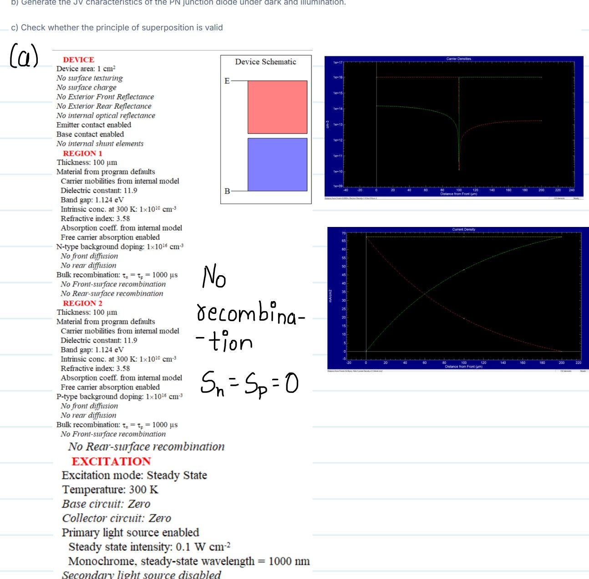

Solar Photovoltaics: Photons to Farms.
A progression from radiation physics to cell limits, device transport and full-year module energy yield.
AM1.5G Spectrum & Ideal Solar-Cell Performance
Integrated the AM1.5G spectrum, calculated photon flux above a bandgap, generated the theoretical Jsc-versus-Eg relation and constructed idealized J–V and P–V characteristics with radiative recombination.
Blackbody Radiation & Solar Spectra
Derived Planck-law relationships, recovered T⁴ radiated-power scaling and compared a 6000 K blackbody with extraterrestrial AM0 and terrestrial AM1.5G spectra, connecting atmospheric absorption to the measured spectral shape.
Semiconductor & PN-Junction Simulation in PC1D
Used PC1D to explore carrier-density and current-density profiles, surface recombination, diffusion length and dark/illuminated PN-junction behaviour.

PV Module Comparison & Annual Energy Yield
Compared commercial module electrical/temperature characteristics and extended the analysis to 2024 irradiance data for California, including temperature-dependent module output and annual energy-yield modelling.